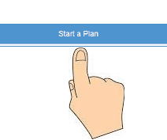
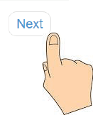

Instructions
Answer the 13 questions by clicking your answers
When you've answered all the questions on the page click "next"
Change your mind? Click "previous" and you can go back and change your answers. The app will save your work.


©2014 Disability Rights Center of Kansas